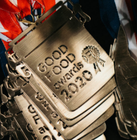
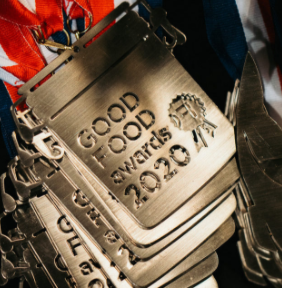

Cheese Award Winners
- Hard Mixed Milk Cheeses 0-6 Months: Iberico Mixed Milk Hard Cheese
- Washed Rind: Highlander from Jasper Hill Farms
- Hard Goat's Milk Cheese: Old Amsterdam Aged Goat Gouda from Old Amsterdam
- Hard Cheeses with Natural Rine: St. Malachi Reserves from Team Doe Run
- Alpine: Le Marechal from Fromagerie Le Marechal SA
- Soft Ripened: Lait Bloomer from Murray's Cheese and Jasper Hill


 


Charcuterie 2021 Good Food Award Winners
- Finocchiona, Babette's Table
- Pork Salami with Mezcal and Lime, Booklyn Cured
- Capicollo, Fra' Mani
- Summer Sausage, Olympia Provisions
- Pate de Campagne, Beltex Meats
- Diablo Salami, Il Porcellino Salami
- Spruce and Candy Salame, Smoking Goose Meatery
- Sweet Prickly Pear Cured Lomo, Texas Iberico
- Salami Calabrese, Fra' Mani